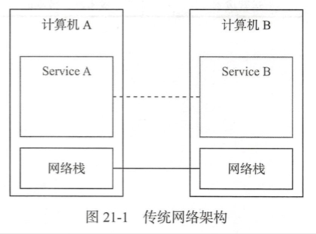

| Title | Date | Modified | Category |
|---|---|---|---|
| micros | 2019-05-29 12:00 | 2019-05-29 12:00 | micros |
1. Istio
1.1. 概述
1.1.1. Service Mesh
要讨论服务网格（Service Mesh），就必须提到微服务（Microservices）。
为了解决微服务架构产生的一些问题，以k8s为代表的容器云系统出现了。这类容器云系统以容器技术为基础，在进程级别为微服务提供了一致的部署，调度，伸缩，监控，日志等功能。
然而，除了进程本身的问题，微服务之间的通信和联系更加复杂，其中的观测，控制和服务质量等都成为微服务方案的短板，因此随着k8s成为事实标准，Service mesh顺势登场。
自Service Mesh技术诞生以来，国内外出现了很多产品，下面选择其中几个重要的产品和事件，大概理理Service Mesh相关产品的发展情况。
Buoyant公司的CEO William，曾经给出对服务网格的定义：服务网格是一个独立的基础设施层，用来处理服务之间的通信。
现代的云原生应用是由各种复杂技术构建的服务组成的，服务网格负责在这些组成部分之间进行可靠的请求传递。
目前典型的服务网格通常提供了一组轻量级的网络代理，这些代理会在应用无感知的情况下，同应用并行部署，运行。
Service Mesh主要功能：
- 负载均衡
- 服务发现
- 熔断
- 动态路由
- 安全通信
- 多语言支持
- 多协议支持
- 指标和分布式追踪
- 重试和最后期限
总结一下，Service Mesh实现了四大关键功能：
- 实现对基础设施的抽象化
- 为应用请求提供可靠传递
- 每个业务节点部署轻量级代理
- 透明化，应用程序无感知。


Service Mesh类似于更高级的一层网络栈。
k8s就是微服务级别的操作系统。
Helm是k8s的包管理工具，类似于yum，apt-get。
Sidecar

1.1.2. Istio
事实上的标准
2017年5月，Google，IBM和Lyft宣布了Istio的诞生。Istio以Envoy为数据平面，通过Sidecar的方式让Envoy同业务容器一起运行，并劫持其通信，接受控制平面的统一管理，在此基础上为服务之间的通信提供了丰富的连接，控制，观察，安全等特性。
Istio一经发布，便立刻获得Red Hat，F5等大牌厂商的响应，虽然立足不稳，但各个合作方都展示了对社区，行业的强大影响力。于是，Istio很快就超越了Linkerd，成为Service Mesh的代表产品。
这里将Istio的特性总结如下。
- 连接：对网格内部的服务之间的调用所产生的流量进行智能管理，并以此为基础，为微服务的部署，测试和升级等操作提供有力保障。
- 安全：为网络内部的服务之间的调用提供认证，加密和鉴权支持，在不侵入代码的情况下，加固现有服务，提高其安全性。
- 策略：在控制面定制策略，并在服务中实施
- 观察：对服务之间的调用进行跟踪和测量，获取服务的状态信息。
1.2. todos demo
TODO
1.3. 参考资料
1.3.1. GitHub
1.3.2. WebSite
1.3.3. Books
- 《深入浅出Istio：Service Mesh快速入门与实践》
- 《基于Kubernetes的容器云平台实战》